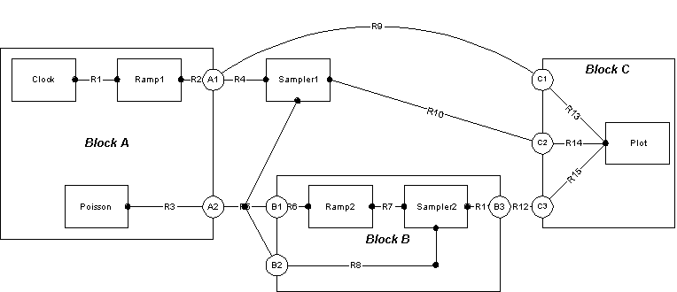

Discrete Event Hierarchy Simulation
This applet demonstrates the hierachical composition of DE inside DE.
Unlike the Adder applet, the composition is an
opaque one. This means that the outer director does not govern the execution
of the actors inside the opaque composite actor. In fact, it is often
desirable to have the inner domain completely different from the outer domain.
This scheme provides us with a way to 'mix-and-match' model of computation.
This applet is implemented by
HierarchyApplet.java.
The simulation consists of Clock Actor,
Ramp Actor,
Poisson Actor,
Sampler Actor,
connected to a Plot Actor.

Copyright © 1998-1999 The Regents of the University of California.
All rights reserved.
Last updated: $Date$, comments to: ptII@eecs.berkeley.edu